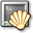

4.1. פתיחת חלון מסוף
כדי לעבור לנקודה הבאה או הקודמת בשקף יש ללחוץ במקלדת על החיצים שמאלה וימינה.
ניתן לעבור לשקף הבא על-ידי המקשים "N" ו-"P".
- כדי לפתוח חלון מסוף, לחץ על סמל המסך והקונכייה בסרגל הכלים של KDE.
 - חלון מסוף יצוץ וניתן להזיזו, לעשות לו מינימיזציה, ולשנות את גודלו כמו כל חלון אחר.
- ראוי לציין שמספר הפצות הורידו את סמל המסוף מסרגל הכלים שלהם. כדי להתגבר על בעיה זו, ניתן לחפשו בתפריטים ואז לגרור אותו לסרגל הכלים.